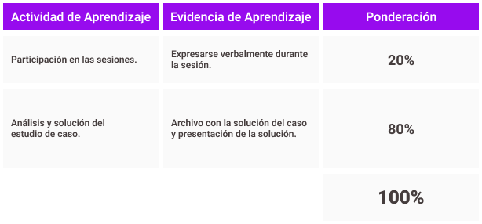

revisa y considera la forma de evaluar y los criterios de evaluación. plantea cualquier duda en la sesión.



revisa y considera la forma de evaluar y los criterios de evaluación. plantea cualquier duda en la sesión.
Respecto a las participaciones, durante el estudio de la unidad temática debes tener 6 participaciones, realiza aportaciones a los temas que se están tratando, las participaciones las registraré con gusto y al final del periodo se tomaran en cuenta en función de la siguiente ponderación:
participaciones = puntos
de forma:
de contenido:
incorpora los cinco criterios de contenido y los dos de forma.
incorpora los tres criterios de contenido y los dos de forma.
incorpora los dos criterios de contenido y uno de forma.
no incorpora los cinco criterios de contenido y los dos de forma.
de forma:
de contenido: